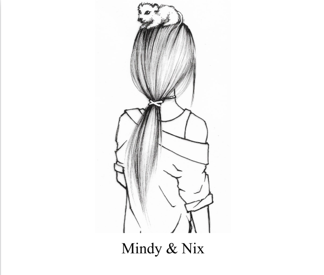

O vrăjitoare pe cale de dispariție.
O șoricică loială.
O insulă uitată de lume.
După șase luni petrecute la grădina zoologică, Mindy știe că ceva nu e în regulă. Colegii o suspectează — de ce știe exact ce temperatură au nevoie șerpii? De ce vorbește cu tigrii? De ce șoricicile o ascultă?
Așa începe fuga. Cu Nix, o șoricică mică și curajoasă, ascunsă într-o borsetă, spre un aeroport care ar trebui să o ducă departe de tot ce cunoaște.
Dar un sunet ciudat oprește lumea în loc. Oamenii uită cine sunt. Avioanele stau pe pistă. Și Mindy ajunge pe o insulă care nu există pe nicio hartă — un loc cu canale secate, corăbii suspendate pe stânci, creaturi blestemate să-și fi uitat forma, și un templu scufundat unde se ascunde un secret mai vechi decât lumea.
O poveste despre memorie, natură, și echilibrul fragil dintre oameni și animale.
Descarcă PDF-ul integral și citește povestea completă, oriunde, pe orice dispozitiv. Fără costuri, fără cont.
⬇️ Descarcă PDF-ulVrăjitoare pe cale de dispariție. Dacă ne ia circul așa vom fi scrise pe afiș. Unde altundeva să ne mai primească după ce am fugit împreună, tu mușcându-i și eu urlând ca lupii? Adevărul e că suntem singure împotriva lumii, dar n-am avut de ales. Nu puteam rămâne acolo.
Descarcă PDF-ul integral, abonează-te pe YouTube și susține povestea pe Patreon.